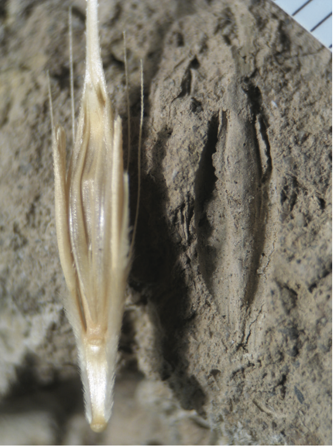

3 Archaeobotany
3.1 Introduction
This chapter provides an overview of the archaeobotanical materials used for this research project. Literature review provided an historical overview of the discipline, while this chapter discusses the goals, types, and preservation modes of the remains. The database storing procedures are described in Chapter 5.
Should the maps be here? Or maybe here put time slices maps
The objective of archaeobotany is to recover, identify, and document plant remains from archaeological sites to reconstruct past vegetation dynamics, human-environment interactions, and food production and consumption patterns. Archaeobotany can also be referred to as “palaeoethnobotany”, a term especially prevalent in North America. Although the word “palaeoethnobotany” places a stronger stress on the human and ethnic interaction with plants (Hastorf and Popper, 1988), the two words are used mostly interchangeably (Hastorf, 1999) as European archaeobotanists share the same objectives. It is important to emphasise that the term “palaeobotany” is not a valid synonym for archaeobotany, as it refers to the study of past evolution and adaptations of plants, and this discipline is not concerned with human-environment interactions (Fuller and Lucas, 2014). In Classical archaeology, some of the archaeobotanical research questions can also be inferred from historical literature. This is problematic, as the evidence often contradicts what is said in texts; Pearsall (2015, p. 27) remarks how the discipline works using an archaeological approach, not an historical one. Furthermore, the domain of archaeology stretches far beyond the chronological range of textual history. In the archaeological record, four types of botanical remains can be identified—macroremains, pollen grains, phytoliths (inorganic elements found in leaves, stems, and other parts of plants), and starches (formed by amylose or amylopectin polymer aggregates) (Pearsall, 2015). As most archaeobotanical studies in Italy deal with macroremains and pollen, this research will only focus on these remains.
3.2 Macroremains
Macroremains such as seeds, nutshells, fruit pips, and charcoal (wood preserved after carbonisation) are visible to the naked eye (> 0.25 mm). It is possible to recover macrofossils—in situ, by screening using sieves, and by flotation. In situ collection is possibly the most problematic, as it relies on the experience of the excavator and favours larger finds. In addition, light conditions and the colour of the soil might influence the ability to visualise seeds and charcoal remains. A solution to this problem is to use screening techniques, and choosing an appropriate mesh size can limit the bias for underrepresented taxa (e.g. particularly small seeds). Often, sieves of different mesh sizes are used at the same time for the purpose of eliminating as much soil as possible from the soil sample. In addition to dry screening, archaeologists also use wet screening. Wet screening refers to the practice of pouring water onto the sieve. It differs from wet sieving, which requires the submersion of seeds in a bucket with water that is gently agitated. In any case, adding water to the sieve can be counter-productive, as wetting might destroy the seeds if they are charred (White and Shelton, 2014). One of the most common types of recovery is by flotation, which encompasses several techniques, each based on the principle that water is denser than charred material. Flotation can be either manual or machine-assisted. The former refers to wet sieving, where seeds are submerged in water and the ones that float are recovered using a mesh. Tools and machines have been also developed for flotation, including the hand-pump (which does not require electricity) and other machine-assisted tools (see Figure 3.1) that use water pressure and aeration to separate the seeds from soil. Flotation also allows the recovery of other small-sized archaeological material, including fish and bird bones, and mollusca (Jarman et al., 1972; Turney et al., 2005, p. 125; Williams, 1973). After separating the seeds from the soil, seeds can be identified and quantified. For the identification, researchers use fossil reference collections and photographs (Turney et al., 2005).

3.2.1 Sampling
A sample is a smaller subset of elements from a population. In statistics, a population is the entire set of elements which we can draw inferences from. Often, it is not possible to know how large is the population, which is then called universe. Whether consciously or not, archaeology has always dealt with sampling. Much of the archaeological record has been lost or destroyed in time, and what we are able to study is a smaller portion of what once was present (Drennan, 2010, p. 80). If we consider the entire statistical population what is currently available to the archaeologist, it would be possible to sample for instance each bucket of soil excavated and count the total number of seeds found. This will certainly provide the most accurate information, although it is almost never possible in real life situations. Common constraints are time, funding, number of excavators, etc. It is then up to the archaeologist to decide how to collect samples, which will be biased by definition since they will not reflect reality. Why bother with sampling then? Archaeobotanical macroremains can be smaller than 1 mm and sampling can provide more information than collecting seeds with the naked eye (i.e. no sampling) (Orton, 2000, p. 148). Moreover, an effective and robust sampling strategy can limit bias as far as possible and try to return meaningful samples. Depending on the context, resources and individual decisions, several possibilities are available—interval sampling, probabilistic sampling, judgemental sampling, total sampling, or no sampling at all (Jones, 1991). The first, interval (or systematic) sampling, consists in sampling at regular intervals. The intervals can be defined in space (samples evenly spaced out in a grid), in time (sampling every tot. minutes or every \(n\)-th bucket), or in the laboratory using a riffle box (a machine designed to divide samples). One drawback of this method is that the regularity in sampling might correspond to a regular pattern in the data, which may bias the results. Probabilistic sampling is a method often advocated for, but rarely used. This type of sample has the advantage of allowing the researcher to draw statistical inferences on the data collected, for instance to calculate the margin of error and confidence intervals. The simplest form of probabilistic sampling is random sampling, for example randomly choosing to sample a square from a grid or a bucket from a series of buckets. Another approach to random sampling is cluster sampling, which requires a prior division of the sampling population into clusters (e.g. by context, area, etc.) and then randomly select some of these clusters during excavation (Orton, 2000). One of the problems that may arise from random and cluster sampling approaches is that of spatial autocorrelation. As Waldo Tobler (1970) puts it:
The first law of geography: Everything is related to everything else, but near things are more related than distant things.
Other forms of sampling include judgemental sampling, a feature based approach and total (or blanket) sampling which consists in taking a certain amount of soil from each excavated context. Both methods will be discussed more in detail below. Finally, an excavation can have no sampling at all. Most of the archaeobotanical samples with macroremains recorded in the database were collected using different types of visual sampling, not always made explicit by the authors. Visual sampling occurs when archaeologists can visually see or expect (i.e. judgemental sampling) macroremains in the feature they are excavating. Common features from which samples are usually collected include—pits, hearths, filled anforae, etc. But “how can one argue that the contents of a pit reflect activities involving food specific to that context, if one has not examined samples from floor deposits into which the pit was dug, or the deposits overlying it?” (Pearsall, 2015, p. 75). Lennstrom and Hastorf (1995) lament “feature biases” in many archaeological excavations, as paleobotanists are often called after archaeologists have already recovered materials from specific site features. The authors call for a general misconception in the goal of archaeobotany—to collect as many macroremains as possible. This strategy is, in fact, not very informative about the relationships between plant remains and stratigraphic units, and the general deposition patterns in the site. For instance, Jones et al. (1986) were able to reconstruct the functions of structures and the methods of crop storage at Assiros, northern Greece, through a thorough extensive sampling. Pearsall (2015, p. 74) recommends a “blanket sampling” strategy, which consists in collecting samples for flotation from each stratigraphical unit. The advantages of blanket sampling are manifold:
If in theory sampling from strategical features (e.g. hearths) maximizes the chances of recovering more macrobotanical remains, in practice this is not always the case. For instance, if a hearth was used on a regular basis, it could possibly have been cleaned of ashes frequently, and the excavator might have more luck sampling around it.
Including the collection of samples from each layer in the excavation leads an uniform and standardised procedure, reducing the variation across samples.
Blanket sampling allows an easier reconstruction of deposition patterns and of stratigraphic units relations as stated above. For instance, one can analyse differences in macroremains densities across samples.
In addition to choosing the most efficient sampling strategy, sample size is also a problem that has been discussed in archaeobotany. The sample size, often indicated in litres in archaeological reports, can be constant or variable depending on the context. The size can have important repercussions on the richness of the sample, a topic that will be dealt with more extensively in the chapter discussing the methods used in this thesis. In short, a particularly small sample size can affect the number of species found. In particular, rare species may be either not represented or under-represented (Pearsall, 2015, p. 160). While archaeobotanists have advocated for more specific sampling strategies for over 40 years, very few of the Italian excavations in this dataset applied blanket or probabilistic sampling, and collecting samples from features is still the most common practice.
3.2.2 Preservation
There are several ways in which seeds can be preserved, among them charring (or carbonisation), mineralisation, waterlogging, desiccation, metal oxide preservation and as imprints in ceramics (Fuller and Lucas, 2014). This section will focus only on grain preservation, excluding wood remains, as anthracological data (charred wood) has not been recorded on the database. The mode of preservation has a strong effect on the species of plants that can be found in the archaeological level. Cereals and nuts have higher chances of being preserved by charring, while fruit pips, herbs and spices are most common in waterlogged sediments. Nuts, fibrous and oil-rich plants are also equally preserved under water. Desiccation greatly preserves several parts of a plant, although it occurs very rarely (Veen, 2018, p. 71). These factors influence the representation of plants in the archaeological context, and one must be aware that the most identified taxa may represent the plants that had the best chance of being preserved. The most represented taxa therefore do not necessarily coincide with the most numerous or used plants at the site being investigated (Pearsall, 2015, p. 42). Figure 3.2 and Figure 3.3 show how different preservation methods affect the representation of a taxon.

c= charred, m = mineralised, w = waterlogged, u = unknown]. Image after Livarda (2018).
A final comment must be made on the state of preservation of botanical macrofossils. Regardless of how the seeds have been preserved from deposition to the time of excavation, the state of preservation of individual seeds may also be affected by mechanical actions such as fragmentation or erosion. Indeed, it is not uncommon for an archaeologist to find seeds that are only partially intact.


3.2.2.1 Charring
Carbonisation is the most common way of finding seeds when excavating an archaeological site, most notably when using flotation on the samples. Carbonisation occurs when seeds (or other botanical materials) are exposed to fire at not excessively high temperatures and under anaerobic conditions so that the combustion process is not completed. Other factors include the proximity to the fire source, fuel type and elements associated to the seed (i.e. chaff and straw) (Turney et al., 2014, p. 93). Several experiments have been carried out to understand the way in which carbonisation takes place and for a review of the literature on this topic, readers can refer to Pearsall (2015, pp. 41–42). Charred seeds lose their original colour (turning black), but mostly retain their morphology although slightly changing their dimension. The chance of preservation is particularly high considering that charred material is not attacked by bacteria or fungi (Weiss and Kislev, 2007).
3.2.2.2 Mineralisation
Mineralisation is a natural process that leads to the replacement of organic material with inorganic material. Through phosphatisation, soft tissue is replaced by calcium-phosphate minerals that preserve the morphology of the seed (Murphy, 2014). Mineralisation can also occur because some plants are particularly mineral-rich, and the phenomenon takes place prior to deposition. This is known as biomineralisation (Messager et al., 2010). For instance, mineralised seeds can be found in latrines or cesspits (Veen et al., 2013, p. 164).

3.2.2.3 Waterlogging
Organic material maintained in a wet environment under very low oxygen levels (anaerobic conditions) can be preserved as the activity of micro-organism is low or entirely absent. Examples of wet environments include natural ones (lake, riverine, marine sediments, marshes, bogs, etc.) or man-made (pits, latrines, wells, ditches, etc.) (Spriggs, 2014). Waterlogged seeds do not degrade markedly, but their starch, sugar and protein content is low and their colour is dark (Weiss and Kislev, 2007).
3.2.2.4 Desiccation
This phenomenon is limited to very arid regions (mostly Egypt, some areas of China and Spain), where the complete desiccation of the organic material prevents microbial decay. Where plant material is preserved through drying, the preservation is remarkable; for instance, even aDNA survives in desiccated seeds (Veen, 2018, p. 58).
3.2.2.5 Metal oxidation
Plant material can be preserved if found in proximity to metals. Metal oxides when the soil is moist, creating a toxic environment for microbial activity.
3.2.2.6 Ceramic imprints
The imprints of seeds and plants on the wet clay can help the investigator recognise the morphology of the seed and identify the plant, however the organic material is not preserved and the marks on the pottery are the only visible remains (Schepers and Vries, 2022).


3.3 Microremains: palinology
Palynology deals with the study of pollen grains and spores. The former are produced by seed plants, angiosperms and gymnosperms, and are not visible to the naked eye; hence, magnification is required (Bennett and Willis, 2002). The grains are formed in the anther, and are used to transport the male cells to the pistil of another flower to fertilise the female eggs (pollination) (Bakels, 2020). The discipline of palynology also studies spores, micro-particles originating from fungi and algae. Prior to their deposition, pollen grains are transported in the air by wind, insects, bats and some bird species. At some point, the grains fall to the earth’s surface or in water. The phenomenon is known as “pollen rain”, and the accumulation of pollen deposited in a location can represent to a certain degree the collective environment that produced the sediment. Palinologists usually distinguish between off- and on- site pollen. Off-site pollen is collected from permanently waterlogged contexts as lake bottoms, bogs, etc. This approach is particularly recommended for climatic and palaeoenvironmental reconstructions, as pollen and spores are deposited and permanently sealed. On-site pollen is collected from archaeological layers and the nature of its deposit is much different than off-site samples (Bennett and Willis, 2002; Pearsall, 2015). Anna Maria Mercuri (2014) reports that:
People and animals transported plant parts into the site through plant harvesting, on feet and skins, or by coprolites. Pollen accumulation was, thus, mainly the ‘result of human action’ and a true imprint of human behaviour.
Off- and on- site pollen answer then different questions. If the former allows the archaeologist to draw inferences about past vegetation and land use, the latter are much more site-specific and provide us with more information about the plants in the immediate proximity of the site. An agricultural historical analysis of a single site would therefore be more appropriate with pollen collected on-site, however taking into account that the deposition of pollen grains can be the result of human and animal mobility (Mercuri, 2014) or imports (Bakels, 2020, p. 205). A correct environmental reconstruction of the area surrounding an archaeological site must then always consider more factors, such as combining pollen data with carpological data.
3.3.0.1 Sampling and preservation
Pollen can be sampled from permanently wet sediments including—river beds, lake bottoms, peats, ponds. The catchment area of the resulting pollen diagram depends on the sampling location. The catchment area of samples from a lake bottom is wider in range, whereas a small pond has a relatively restricted range. In the latter case, it would be more appropriate to sample several locations to reconstruct the palaeo-vegetation of a region, provided the necessary funds and resources are available. In any case, almost 99% of pollen is deposited within 1 km of the original source (Armstrong and Brasier, 2005). In rare circumstances, it is also possible to sample from dry contexts as colluvia layers and buried soils. A colluvium layer is a superficial deposit produced by meteoric erosion on topographic slopes (Parry, 2011). Although not usually preserved in dry buried soils, pollen grains can be found in particular conditions, as in very acidic soils, where the microbial activity is very low. Other factors leading to pollen being preserved in dry soils are not entirely known in detail yet (Bakels, 2020, p. 215; Moore et al., 1991). The sampling locations mentioned above are off-site locations. On-site locations are mostly waterlogged archaeological contexts, such as—moats, wells, and cesspits. This type of deposit is not suitable for environmental reconstructions, as it tells about local dynamics and human behaviour. The collection of pollen samples must be accurate, because the risk of contamination with upper or lower layers is high. For this reason, it is essential to avoid layers that have been in direct contact with air. There are several techniques for collecting samples, in most cases a section is sampled to obtain a pollen diagram. Sections are sampled using zinc tins that are hammered into the section. The height of the stratigraphical layers are marked on the back of the tin, which is later sealed with plastic foil and stored. When sampling a section is not possible, samples can also be obtained through cores, continuous sections of sediment stored in a plastic cylinder. The coring process is described more in detail in Stein (1986). Although being more resistant to decay than seeds, thanks to an outer protective layer (the exine), pollen too is not exempt from preservation biases. Some types of pollen are not preserved at all, some decay faster and others last longer. Common causes of deterioration include—corrosion of the pollen exine (the outermost protective layer of the pollen grain) from biochemical oxidation, degradation from chemical oxidation in aerial and subaerial environments, mechanical damage (e.g. breaking of the pollen grain), and mineral deposition (Jones et al., 2007). Another source of bias is taxonomic under- or over- representation. Pollens that have a slow decay rate tend to be overrepresented, for instance in the case of the Asteraceae. Other sources of bias are represented by differences in pollen production of individual taxa. Plants that rely on animal pollination produce less pollen than plants that can only rely on wind transportation. Light exposure also contributes to the amount of pollen produced by plants (Bakels, 2020). Cereals are likely to be under-represented in pollen spectra as their contribution to the pollen rain is limited—the largeness of the pollen grains (> 0.40 μm) prevents them to be transported far from the wind as they fall to the ground. Even ancient and wild wheats such as emmer (Triticum dicoccum), which Johannes Iversen (1973) hypothesised were cross-fertilizing and releasing more pollen into the wind than modern self-pollinating wheats (i.e. bread wheat), seem to contribute only marginally to the pollen spectra (Bottema, 1992). One notable exception is rye (Secale cereale), a cross-pollinating plant, which produces a large amount of pollen grains (Piotrowska, 2012). For the reasons stated above, the situation illustrated by pollen diagrams does not entirely match to the reality of past environments. Several experiments with modern pollen have been conducted to attempt to correct these biasing factors using software and statistical approaches (Mehl and Hjelle, 2015; Middleton and Bunting, 2004; Sugita, 2013).